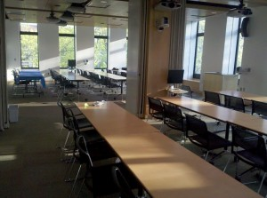
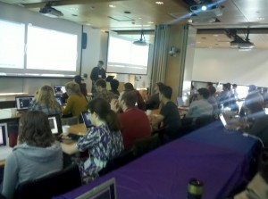

Software Carpentry brought a boot camp to the University of Chicago with collaboration from the FLASH Center at the University of Chicago's Computational Institute and The Hacker Within . The instructors were Milad Fatenejad, Katy Huff, Anthony Scopatz, and Joshua R. Smith.
Space constraints at U. Chicago meant that only 50 empty seats could be secured for two contiguous days on campus. But, the room was lovely!

Thus, though the first day of enrollment brought 125 requests for tickets, only 50 could be invited. Despite the valiant efforts of Anthony Scopatz and the FLASH center administrators, no extra space could be found. The ubiquitous Anthony Scopatz, organizer extraordinaire, insisted a few days beforehand that accepted students unable to attend step aside to allow tickets to be granted to students on the wait list. Unfortunately, there were 20 no-shows nonetheless.

The discouraging lesson from this is that maximal attendance is not guaranteed even when demand is not the constraint.
Encouraging lessons were learned too. The bootcamp was taught on virtual machines, a favorite tactic of Hacker Within boot camps, which nearly eradicated technical difficulties. Since all students were following along in identical linux environments customized for the boot camp, initial set up took less than half an hour, and there were no interruptions thereafter. Feedback from the (mostly post-doc and grad student) attendees included comments echoing common themes:
Excellent reviews, if we do say so ourselves!
Originally posted 2012-04-05 by Katy Huff in University of Chicago.
comments powered by Disqus